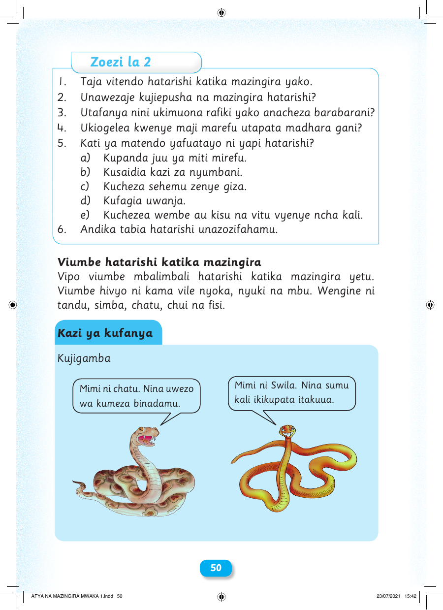

Zoezi la 2 1. Taja vitendo hatarishi katika mazingira yako. 2. Unawezaje kujiepusha na mazingira hatarishi? 3. Utafanya nini ukimuona rafiki yako anacheza barabarani? 4. Ukiogelea kwenye maji marefu utapata madhara gani? 5. Kati ya matendo yafuatayo ni yapi hatarishi? a) Kupanda juu ya miti mirefu. b) Kusaidia kazi za nyumbani. c) Kucheza sehemu zenye giza. d) Kufagia uwanja. e) Kuchezea wembe au kisu na vitu vyenye ncha kali. 6. Andika tabia hatarishi unazozifahamu. Viumbe hatarishi katika mazingira Vipo viumbe mbalimbali hatarishi katika mazingira yetu. Viumbe hivyo ni kama vile nyoka, nyuki na mbu. Wengine ni tandu, simba, chatu, chui na fisi. Kazi ya kufanya Kujigamba Mimi ni Swila. Nina sumu Mimi ni chatu. Nina uwezo kali ikikupata itakuua. wa kumeza binadamu. 50 AFYA NA MAZINGIRA MWAKA 1.indd 50 23/07/2021 15:42